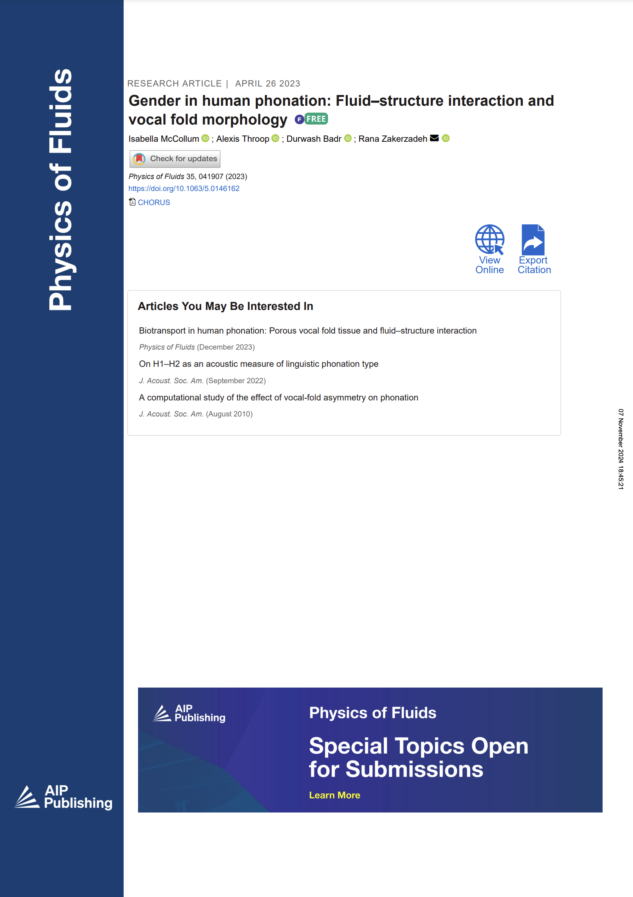

This is singer/songwriter, @iamlulise getting a yearly check up after having surgery to remove a vocal polyp.#Vocalcords are two bands of smooth muscle tissue found in the larynx (voice box). When you speak, the bands come together and vibrate to make sound. 🗣️ pic.twitter.com/YAAP3Zo83X
— Science Channel (@ScienceChannel) August 10, 2022
Besides pitch, what differentiates male and female voices?
byu/snoee inaskscience